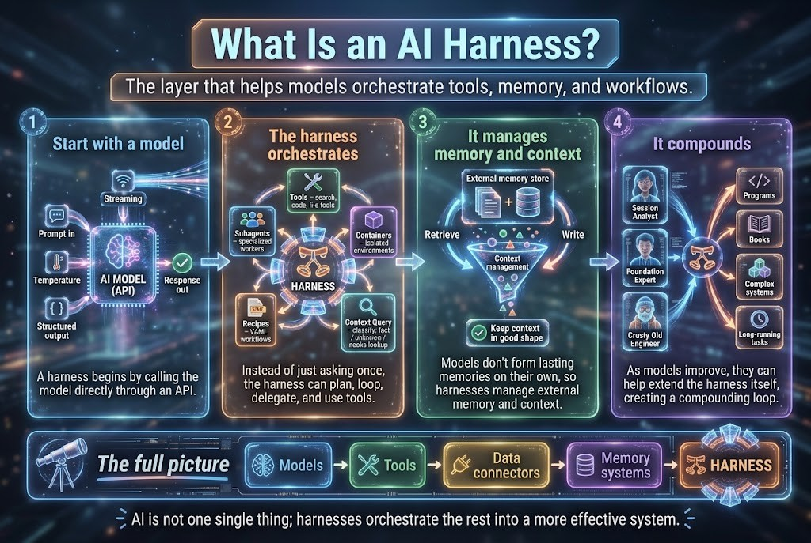

Standard · Students
Free to learn and join, including education accounts. Subsidized by the business customers. Community updates, cohort access, and a self bot.
Master AI and Build the Future
These are the marketing bots we are already building. VIP businesses run them as a managed service at $100 per bot.
The layer that helps a model orchestrate tools, memory, and workflows. A bot is not the model alone. The harness is what makes the bot useful in a business.

A harness begins by calling the model through an API: a prompt in, a temperature, a structured answer out, sometimes streamed.
Instead of one question and one answer, it plans, loops, delegates, and uses tools, subagents, containers, and recipes.
Models do not keep a lasting memory. The harness retrieves and writes an external store so the context stays in good shape.
As models improve, they help extend the harness itself: programs, books, complex systems, and long-running tasks.
The same harness, three ways in. Business customers subsidize the students. Professionals learn to build it. We create, manage, and maintain it for the enterprise.
Free to learn and join, including education accounts. Subsidized by the business customers. Community updates, cohort access, and a self bot.
We help you build the harness and become a Delivery Pilot. Full course access, active 1-1 sessions, and hands-on bot setup. $1 a month.
As a managed service provider we create, manage, and maintain the harness for the business. $10 a month, and managed bots at $100 per bot.
The proof is not a slide. It is the marketing bots in the catalog, kept alive by the same Delivery Pilot practice we use with a business.
The bot stays inside a defined role and domain. Access, content, and actions have a boundary before the bot talks to a customer or a cohort.
When the offer, the audience, or the channel changes, the bot changes with it. The business output stays the same: the role, the domain, and the topics.
Certified professionals learn the bot by running it. The cohort that sponsors the work is the same cohort that can carry the next bot.
The private catalog at github.com/rifaterdemsahin/bots holds 52 roles, last read 4 October 2026. These marketing roles are marked Active. They sit at the front because they are the proof a business can buy.
Writes customer-discovery content and feeds the video pipeline the business uses to find the next buyer.
Drafts and sequences professional messages and keeps a relationship pipeline, so outreach does not depend on one person’s memory.
Keeps the audience inside the connection cap, turns connections into followers, and collects feedback.
Keeps posts and notes at one standard, so the public message matches the certified practice.
Builds learning paths and tracks skill gain, which is how a free student moves toward certification.
Renames each clip from its first frame, so the content library stays searchable as volume grows.
Local text-to-speech for posts and notes, so a marketing piece can ship with audio without a studio booking.
Warns when video production, customer discovery, and consulting no longer fit in one week.
These roles are Active in the same catalog. Hermes, the gateway that runs the scheduled work, is Healthy. One recorded result: the expenses bot reported 23 receipt files for September 2026. That pack still needs a human review before it is closed.
Catalog, private: github.com/rifaterdemsahin/bots
A business sale sponsors the students. The professionals who close the skill gap get certified and build the bots the business needs next. Delivery Pilot supports that business as a managed service provider: we secure the bot, adapt it, and train the people around it. The Delivery Pilot template is what makes that sustainable. It holds the software development life cycle together while the business mitigates the risk of AI transformation by staying on the output — the role, the domain, and the topics.